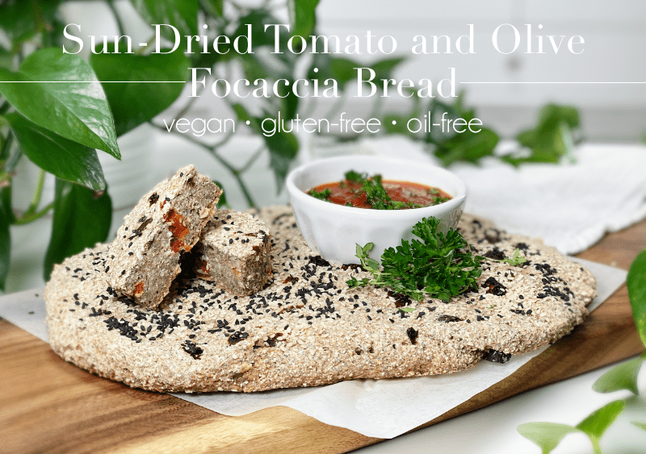
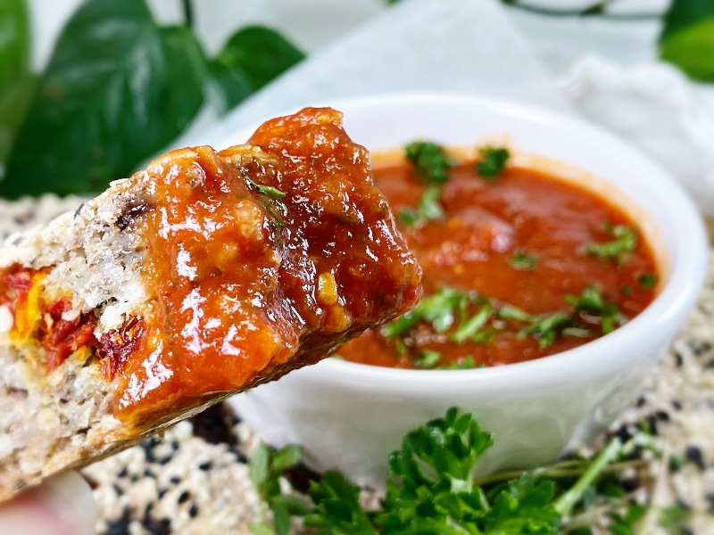

Sun-Dried Tomato and Olive Focaccia Bread | Baked | Vegan | Gluten-Free | Flour-Free
This focaccia bread is delightfully chewy, soft, and packed full of flavor. If you are unfamiliar with this style of bread, it is a flat oven-baked Italian bread similar in style and texture to pizza; in some places, it is called “pizza bianca.” It can be served as a side dish or as sandwich bread. Today, we enjoyed the whole experience by dipping it into a fresh marinara sauce. The combination of tart sun-dried tomatoes and the fruity, sweet kalamata olives made our taste buds sing.

I created this recipe for Bob’s birthday (February 5th). In the photo, I cut the bread, but when it was brought to the table for lunch, we found ourselves tearing chunks off and chasing every last drop of marinara that had fallen onto our plates. In fact, Bob had so much fun just tearing at the bread that now whenever I make bread (which is weekly), I always make a small oval-shaped loaf that he can carry around with him and bite off mouthfuls… it’s all part of experiencing food!

The ingredient list may seem a bit long, but trust me, it goes together quickly. Soon enough, you will have the rich Italian aromas wafting through your house. Once you pull it out of the oven, you will have difficulty resisting it. To that, I say, “Succumb to your temptations and dive in!”
Tips and Techniques
As I already mentioned, this bread is simple to make, but I want to point out a few helpful tips that will lead to successful focaccia. Remember, my goal is to make you the superhero of your own kitchen!
- Roll the dough out to 12″ x 18″ x 3.75″
- Do not overbake the bread, or it will be dry. The top of the bread doesn’t darken a lot, so don’t go by the coloring to determine whether the bread is done.
- If your sun-dried tomatoes are hard and rubbery, rehydrate them in warm water until soft.
- Do not skip the soaking process of the buckwheat kernels.
Well, that about sums things up. I am going to keep this post short so you can spend more time in the kitchen. Please let me know what you think about the recipe down below in the comment section. Blessings and love, amie sue
 Ingredients
Ingredients
Yields 12″ x 18″ x 3.75″
- 1 cup raw whole buckwheat kernels, soaked
- 1 1/2 cups gluten-free rolled oats
- 1/4 cup chia seeds
- 1/4 cup psyllium husks (not powder)
- 2 tsp Italian seasoning
- 1/4 cup unsweetened applesauce
- 1 1/2 cups water
- 1 tsp sea salt
- 1 tsp aluminum-free baking powder
- 1/2 tsp baking soda
- 1 Tbsp black and white sesame seeds
- 1/4 cup sun-dried tomatoes, rehydrated
- 1/4 cup sliced kalamata olives
Preparation
Soaking the Buckwheat
- Place the buckwheat in a glass or stainless steel bowl, and cover with double the amount of water.
- Add 2 Tbsp raw apple cider vinegar, stir, and cover with a clean dishtowel.
- Let it sit on the counter for 30 minutes to 4 hours.
- Once ready to use, drain and rinse before adding to the food processor.
Mixing and Baking
- Preheat the oven to 350 degrees (F) and line the baking sheet with parchment paper so it doesn’t stick.
- If the sun-dried tomatoes are tough or hard, soak them in enough warm water to cover them. Drain before adding them to the batter.
- Add the rolled oats, chia seeds, psyllium husks (not powder), Italian seasoning, applesauce, water, salt, baking powder, and baking soda to the food processor (along with the buckwheat). Process for a full 30-60 seconds.
- Drain the soaking sun-dried tomatoes and add them along with the sliced olives to the batter, giving it a quick stir.
- Immediately pour the batter onto the lined baking sheet and bake for 45 minutes.
- Optional – sprinkle black and white sesame seeds on top before baking.
- Once done baking, remove from the baking sheet and place onto a cooling rack.
Storage
- Once cooled, you can store in an airtight container or wrap in plastic wrap on the counter for a few days, or in the fridge for around 5 days.
- It also freezes fantastically well. To freeze focaccia, cut it in pieces, wrap each piece in plastic wrap, place in a resealable freezer-safe container, and freeze for up to 1 month.
- You can also reheat in a 375-degree oven for 10 minutes.
© AmieSue.com